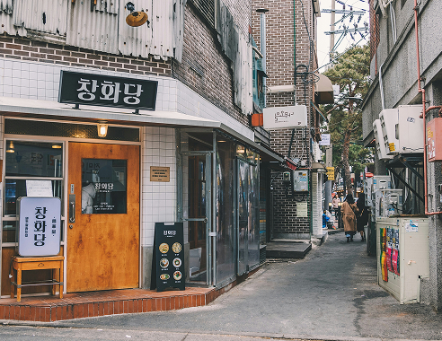
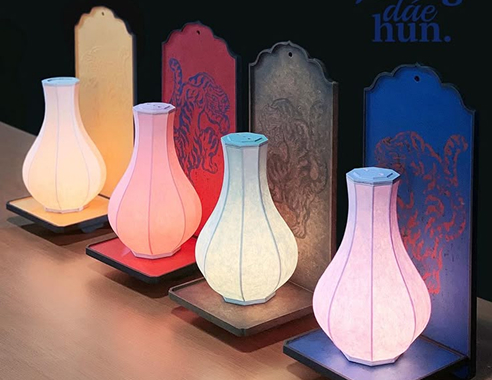
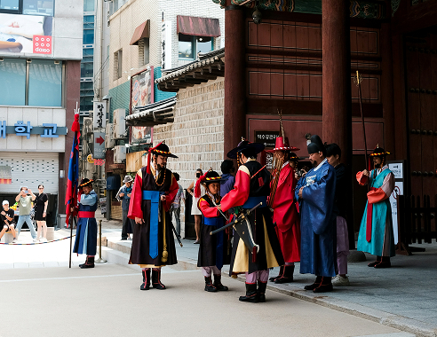
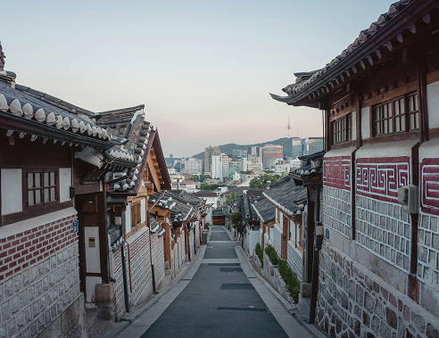
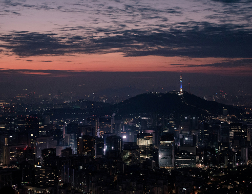

골목마다
이야기가 흐르는 곳
-

골목길 해설사
전문 해설사와 함께
종로를 가장 깊이 있게 만나는 방법,
지금 골목길해설과 함께하세요. -

시청각 장애인 해설사
감각을 넘어 마음으로 전하는 종로의 풍경,
시청각장애인 해설사와 함께
특별한 길을 걸어보세요. -

북촌 전통 공예 체험관
손끝으로 이어지는 전통의 아름다움
직접 만들며 배우는 우리 문화의 깊이,
지금 북촌 전통공예체험관에서 만나보세요. -

종로의 이야기꾼 전기수
입담으로 시대를 움직인 조선의 스토리텔러,
전기수가 들려주는 종로의숨은 이야기
지금, 이야기의 현장으로 떠나보세요. -

종로 모던길 사운드워크
소리로 만나는 종로의 역사,
모던길 사운드워크로
종로의 이야기를 귀로 느껴보세요. -

순라길, 순라군 해설
조선의 밤을 지키던 순라군의 발자취,
길 위에서 역사 속 인물을 만납니다.
고요한 순라군의 이야기를 만나보세요. -
한양도성 스탬프투어 해설
성곽을 따라 걷고, 추억을 찍는 여정.
발걸음마다 역사가 쌓이는
특별한 투어를 만나보세요.